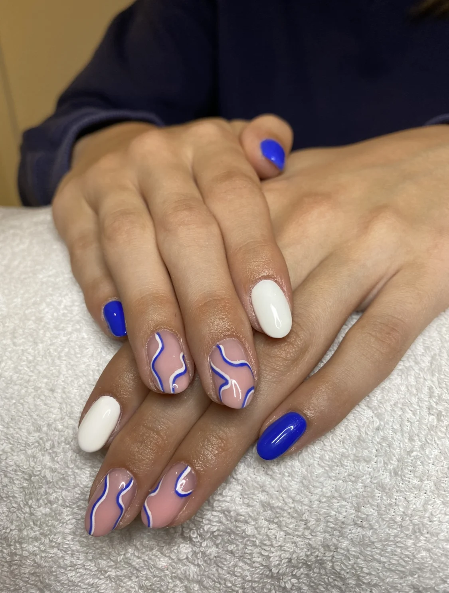
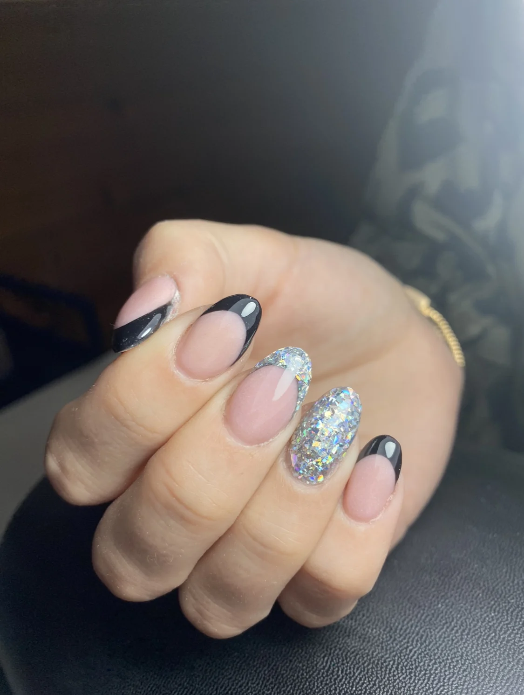
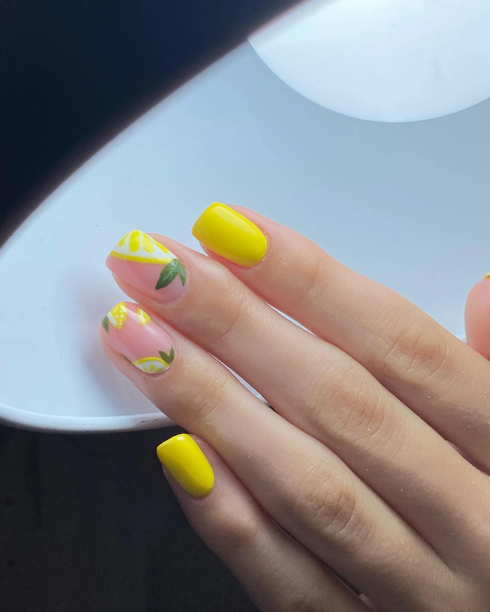
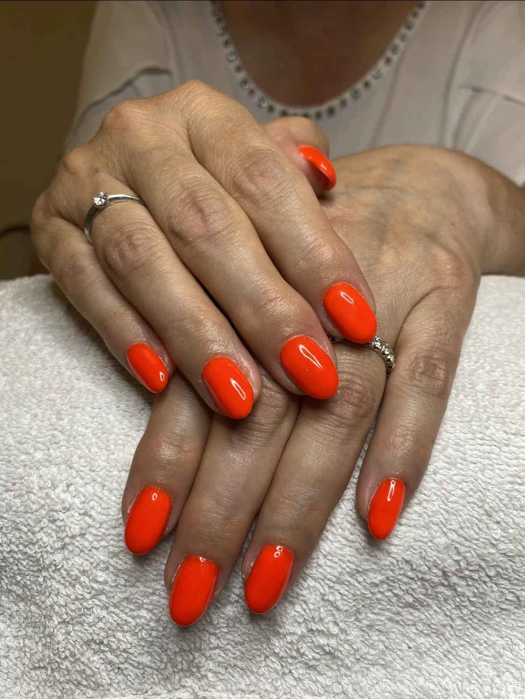
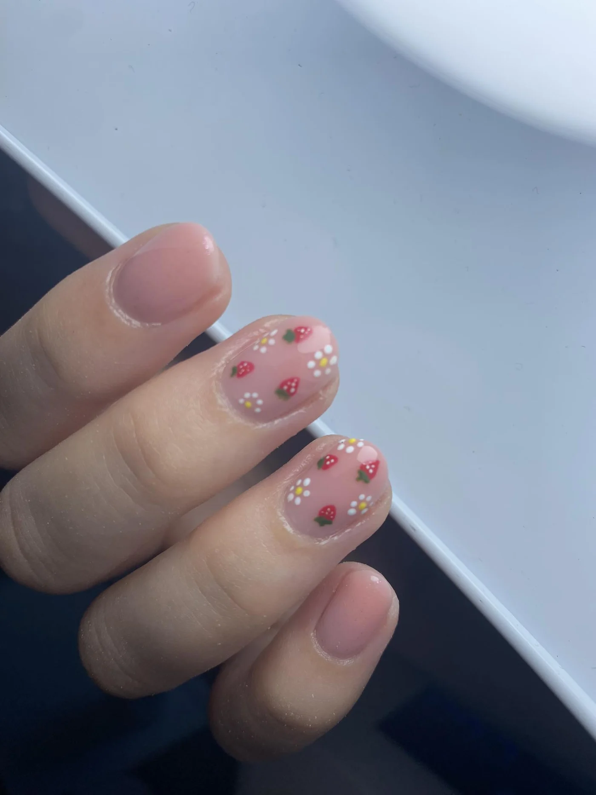
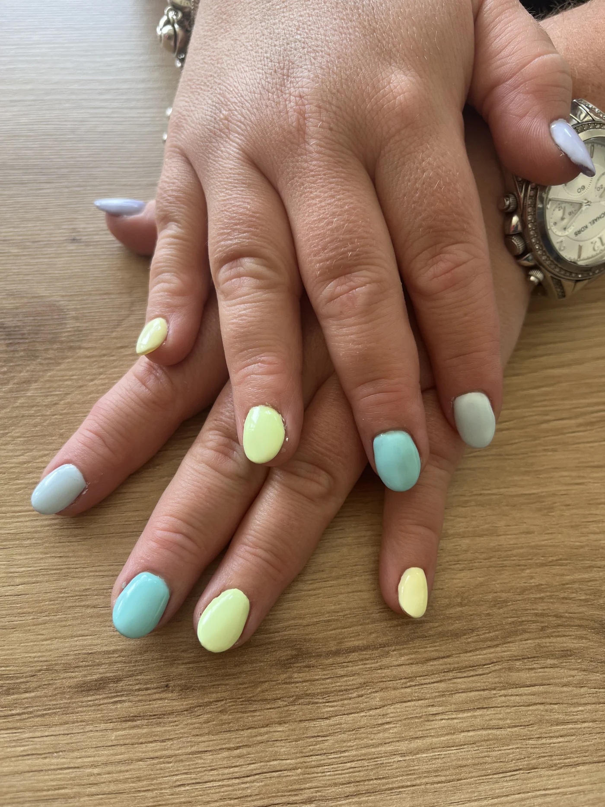
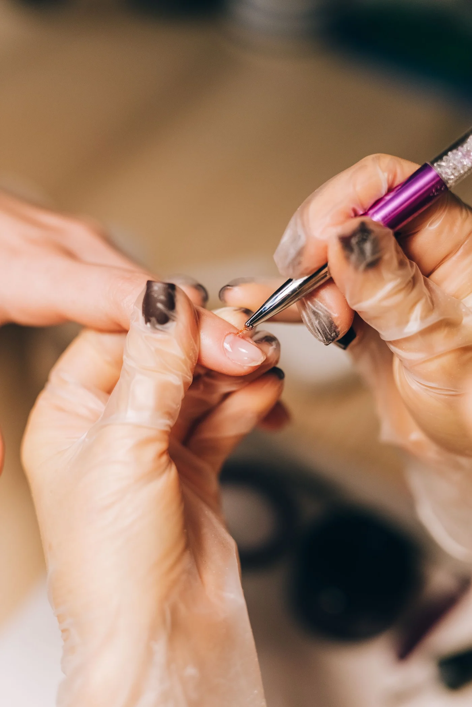

Nagelstudio · Maldegem
Nagels waar je complimenten mee krijgt.
Gelnagels en nail art aan de Lievebarm. Je brengt je eigen idee mee, of Gaëlle stelt zelf iets voor.
5,0★★★★★15 reviews op Google
Recente sets
Elke maand iets anders.
Strak en naturel, of vrolijk met bloemetjes en citroentjes. Een greep uit de sets van Gaëlle.





Zo werkt het
Jouw idee, haar hand.
Bij Gaëlle zit je rustig aan tafel, je babbelt wat en de tijd vliegt voorbij.
- 01
Breng een idee mee
Een foto, een kleur of gewoon een gevoel. Weet je het niet, dan stelt Gaëlle zelf iets voor.
- 02
Ook voor nagelbijters
Korte of afgebeten nagels? Ook dan wordt het een mooie set.
- 03
Goede producten
Ze werkt met kwalitatieve producten en gaat samen met jou voor het beste resultaat.
Sfeerbeeld

“Ik ben een echte nagelbijter maar als ik buitenkom bij Gaëlle, is dat er niet aan te merken.”
Wat klanten zeggenZe blinkt echt uit in nailart en ik krijg elke maand heel veel complimenten over mijn nagels.
5,0uit 15 reviews op Google
Lees ze allemaal
Lees ze allemaal
Zeer lieve, aangename, warme, professionele nagelstyliste. Betaalbaar en zeer mooie setjes nagels. Een aanrader.
Afspraak
Tijd voor een nieuwe set?
Kies je moment in de online agenda. Liever eerst iets vragen of een foto doorsturen? Stuur Gaëlle gerust een berichtje.
Wanneer
- Maandag9u tot 17u
- Dinsdag9u tot 15u
- Woensdag8u tot 18u
- Donderdag9u tot 15u en 19u30 tot 22u
- Vrijdag9u tot 16u30
- Zaterdag9u tot 17u
- Zondaggesloten
Lievebarm 57
9990 MaldegemRoute plannen
9990 MaldegemRoute plannen